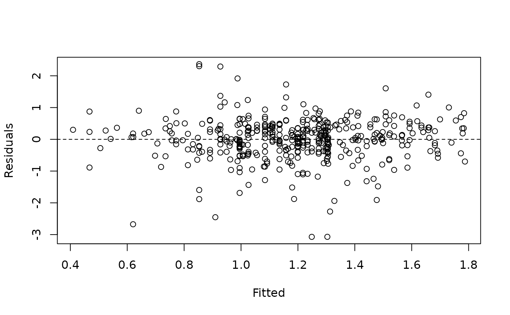

Augment data with ivreg2 model predictions and residuals
Source:R/broom-methods.R
augment.ivreg2.RdAdds .fitted and .resid columns to the model frame (or user-supplied
data).
Usage
# S3 method for class 'ivreg2'
augment(x, data = NULL, ...)Arguments
- x
An object of class
"ivreg2".- data
A data frame to augment. If
NULL(default), uses the stored model frame (x$model) and attaches the stored fitted values and residuals. An error is raised ifmodel = FALSEwas used at estimation time anddatais not supplied. Whendatais supplied,.fittedis computed fresh viapredict()on the supplied rows, which matches columns by name rather than position; the result is therefore correct for data that is reordered, subsetted, or extended with new rows. Rows withNAin a required predictor receiveNAin.fitted..residis added only when the response column is present indata(broom convention); it is omitted otherwise. Supplyingdatafor a model fit withpartial =raises an error, sincepredict()cannot score new data after partialling. Because.fittedis a prediction, not an estimation-sample indicator, a row ofdatathat was excluded from estimation only because the response (or an instrument) wasNAstill receives a real predicted value whenever its regressors are complete; useresiduals()or the stored model frame (x$model) to identify which rows were actually used in estimation.- ...
Additional arguments (ignored).
Value
A tibble::tibble() with all original data columns plus .fitted,
and .resid when the response is available.
See also
Other broom methods:
glance.ivreg2(),
tidy.ivreg2()
Examples
data(mroz)
mroz_work <- subset(mroz, inlf == 1)
fit <- ivreg2(lwage ~ exper + expersq | educ | age + kidslt6 + kidsge6,
data = mroz_work, vcov = "robust")
augment(fit) |> head()
#> # A tibble: 6 × 9
#> lwage exper expersq educ age kidslt6 kidsge6 .fitted .resid
#> <dbl> <int> <int> <int> <int> <int> <int> <dbl> <dbl>
#> 1 1.21 14 196 12 32 1 0 1.20 0.0107
#> 2 0.329 5 25 12 30 0 2 0.962 -0.634
#> 3 1.51 15 225 12 35 1 3 1.22 0.297
#> 4 0.0921 6 36 12 34 0 3 0.995 -0.903
#> 5 1.52 7 49 14 31 1 2 1.22 0.305
#> 6 1.56 33 1089 12 54 0 0 1.26 0.299
# Residuals vs fitted
aug <- augment(fit)
plot(aug$.fitted, aug$.resid, xlab = "Fitted", ylab = "Residuals")
abline(h = 0, lty = 2)
